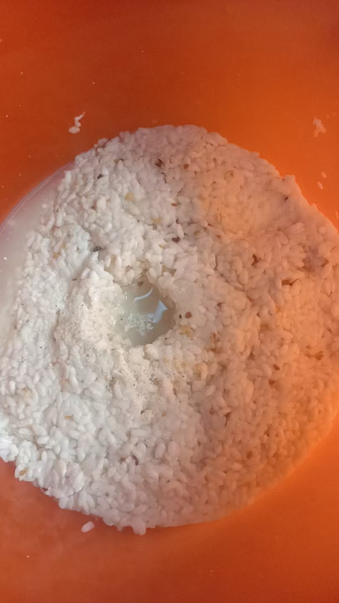
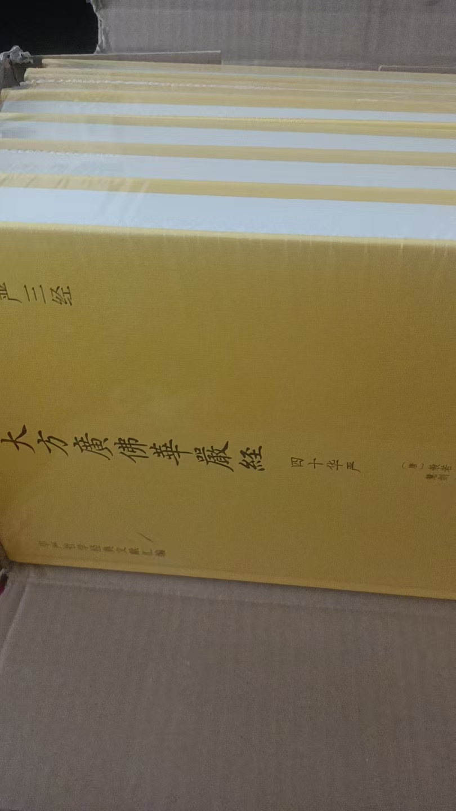

20260713米酒
奇门遁甲前几天，带回家的米酒都说好喝
这是第四天
加了桂花
这两天，再去买两个大水桶，多做点，
问了一下，山东明令禁止
不准做白酒，不准做米酒
但自己做来喝不管
山东最严
小作坊证，根本拿不下来
自己喝或送亲戚，没人管
就是这小区里，隔几天拉一车来，也没商标，二十元十斤，也没人查
[呲牙][呲牙]华严经是不是飞来的
11号下的单，刚才看了一下，说滞留一天，也就是说昨天已经到了
12号
台风不经过潍坊了
不过雨还是要下一点点的
这边山高，台风极少过来
台风巴威也没有到厦门
这个视频可以随时看
所以，这旧手机舍不得扔
以前收藏的，现在都放不了
这老手机还能播放
口袋很浅，昨天上午去超市，回来这手机丢了
就用新手机问元宝，用奇门遁甲看看手机什么时候找到
元宝解答下午两点能找到
结果，连续打这个号码，最后打通了，物业说，两点半去物业拿手机
米酒灭活
八十度，二十分钟

米糖化不完全
再加曲，二次发酵
[呲牙][呲牙]
熟能生巧
就像治病一样，以前，还要见到病人，做法供奉
现在，来也麻烦，直接说几句，好了
甚至有人怀疑，为什么几句话就好了，是不是得病也跟他有关
成了妖道了
什么人也有
所以，不到关键时候，不是有缘人，坚决不会
啥也不会

也不多，六本
米酒糖化发酵好了，剩下很少米，这些米还可以保存起来，多了加白酒曲，继续发酵，蒸白酒